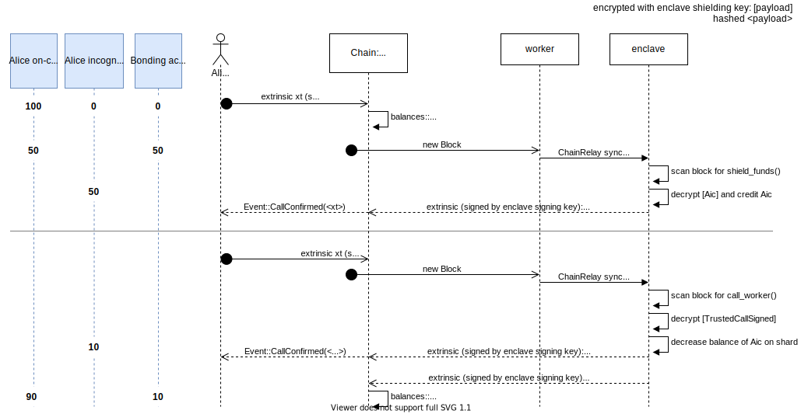
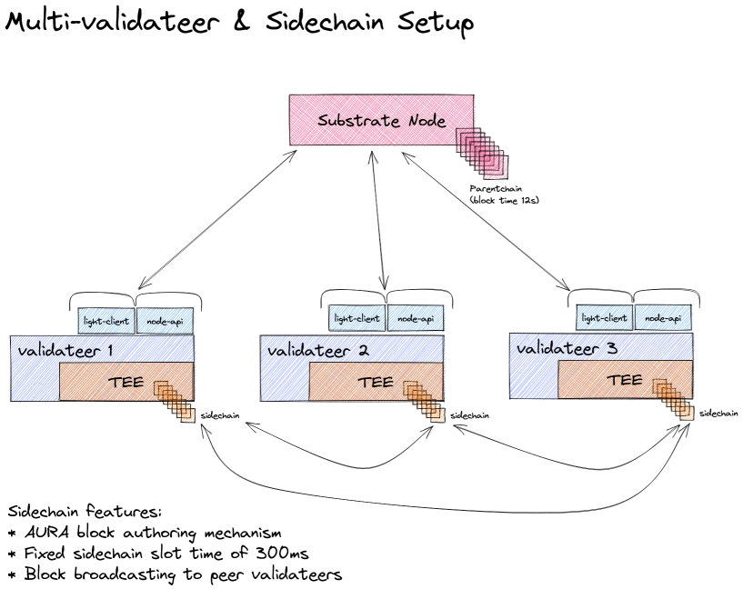
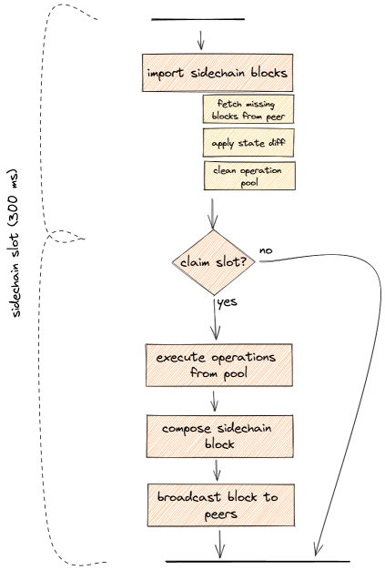
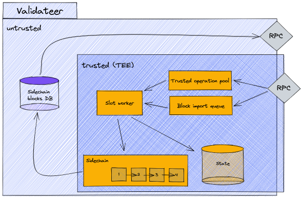
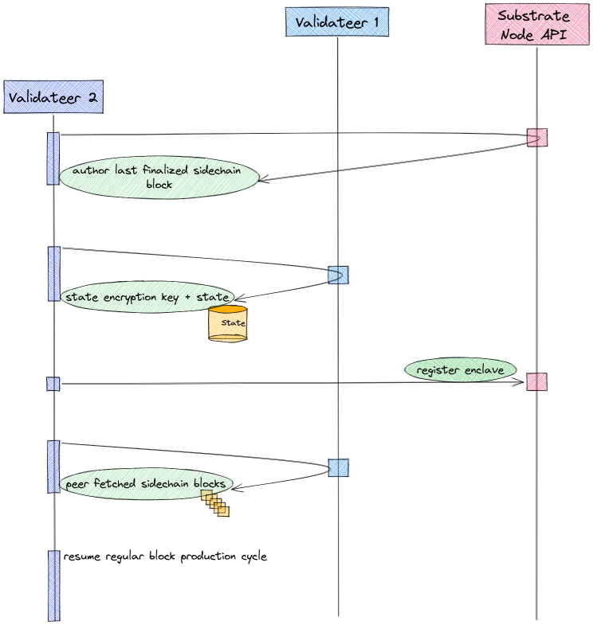
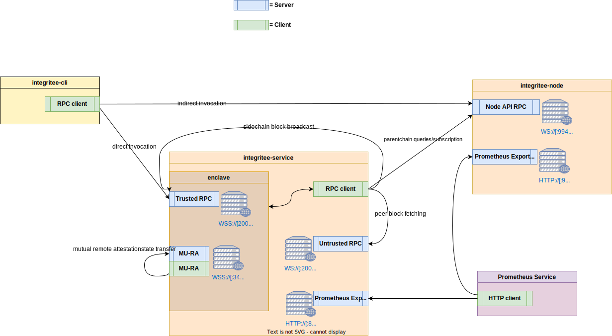
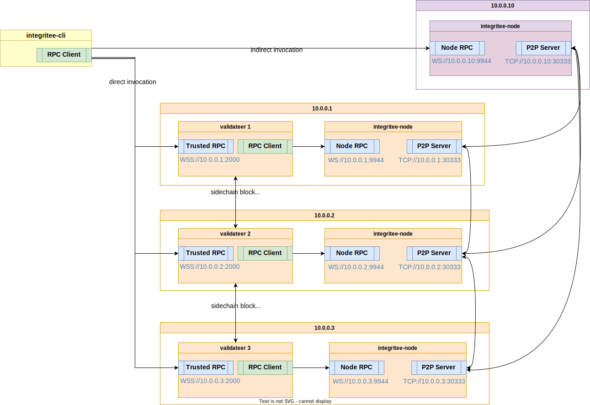

Integritee is a framework for Parity Substrate, allowing to call a custom state transition function (STF) inside a Trusted Execution Environment (TEE), namely an Intel SGX enclave thereby providing confidentiality and integrity. The enclaves operate on an encrypted state which can be read and written only by a set of provisioned and remote-attested enclaves.
What Integritee aims to enable:
- confidential decentralized state transition functions
- private transactions
- private smart contracts
- off-chain confidential personal data records (GDPR)
- decentralized identity with selective disclosure
- subscription-based content delivery networks
- scalability by providing a 2nd layer to substrate-based blockchains
- off-chain smart contracts
- payment hubs
- trusted chain bridges
- trusted oracles
Integritee is maintained by Integritee AG and was originally developed by Supercomputing Systems AG and has been supported by grants from the Web3 Foundation.
We also thank the teams at
- Parity Technologies for building substrate and supporting us during development.
- Teaclave's Rust-SGX-SDK for their very helpful support and contributions.

Trusted Execution
We have become accustomed to the fact that we have to trust our IT administrators. While these administrators used to be in-house employees at our companies, today we often work on rented cloud platforms.
These administrators can read and modify all the data processed on any machine they manage. Unfortunately, this ability extends not only to known administrators we trust but also to hackers who can obtain administrator privileges. No company, no matter how qualified, is immune to such attacks.
Enter TEEs.
You may envision a TEE as a co-processor that manages its own cryptographic keys. The manufacturer of the processor guarantees, by the design of their hardware, that nobody has access to the internal keys of the TEE or can read its memory. Moreover, the manufacturer can authenticate each TEE and provide remote attestation to a user to confirm that their untampered program is actually running on a genuine TEE, even if the machine is physically located in an off-site data center.
TEEs promise, in short, integrity and confidentiality of (remote) computation. You should be aware, however, of possible security threats.
Assuming we trust TEE manufacturers’ integrity and design competence, TEEs allow us to execute any state update without sharing our data with the blockchain validator or other users. Private token transfers, private smart contracts and private state channels thus become possible and relatively cheap.
Remote Attestation
TODO
The goal of attestation is to convince a third party that a specific piece of code is running on a genuine Intel SGX HW.
convincing the Integritee user
A user that interacts with Integritee wants to be sure that the shielding pubkey she uses to encrypt her call to the STF originates form an enclave that
- is running on genuine Intel SGX HW
- runs the official code
- accesses the correct STF state
Classical Remote Attestation Solution
The standard use case for remote attestation involves a service provider (SP) like a video streaming service which wants to be sure his viewer application runs on a genuine SGX HW and respects DRM. The SP therefore requests a quote from the application and sends that quote to Intel Attestation Services (IAS) who sign off the quote if it is genuine.
The issue here is that IAS only talks to registered clients. You need to register in order to get a SPID which needs to be supplied along with requests.
Attestation Registry On-Chain
It isn't practical to ask every client to register with Intel and perform RA before every request. Therefore we'd rather let the integritee-worker operators attest their enclaves with IAS and write the signed quote and their certificate to the blockchain for everyone to verify.
This does change the the attestation protocol. Now the SP and the enclave in the above scheme are both running on the same machine. integritee-worker will itself perform an attestation protocol with its enclave and get the quote signed by IAS. Like this, only Integritee operators need to register with IAS.

The attestation report which is written to an on-chain registry contains:
- enclave quote
- report body
- MRENCLAVE (hash of enclave build)
- Product ID (hard-coded in Integritee source)
- Security Version (hard-coded in Integritee source)
- user data is hash of context:
- enclave-individual signing pubkey
- latest block hash
- ...
- report body
- IAS response
- body
- status (OK||CONFIGURATION_NEEDED|GROUP_REVOKED....)
- timestamp
- enclave quote
- ...
- IAS certificate
- IAS signature over above body
- body
Any user can now verify IAS signature and MRENCLAVE (given the Integritee enclave can be built deterministically). See the example how you can extract MRENCLAVE after building the enclave
The worker can now publish his sealing pubkey, signed with its enclave-individual signing key stated in the quote.
workers will repeat remote attestation in reasonable regular intervals (i.e. once per month)
Enclave Registry On-Chain
In order for the chain validator to be able to verify MRENCLAVE, there must be a consensus about MRENCLAVE of the valid version of Integritee.
Integritee developers will propose code updates to be voted on. Validators check the code and vote on behalf or against each proposal. MRENCLAVE can be reproduced by cloning the integritee-worker repo, building it and then:
sgx_sign dump -enclave enclave.signed.so -dumpfile out.log
TODO: we might need to provide a docker environment the achieve deterministic builds.
secret provisioning
In order to establish shared secrets among workers, they need to convince themselves mutually that they are genuine before entering some Distributed Key Generation (DKG) protocol.
Sealing
provisioned secrets are sealed with Intel's SGX Sealing. Two different kinds of sealing exist. MRENCLAVE is unique for each build and each piece of HW. MRSIGNER is based on the authority of a SW vendor. The latter is practical for proprietary software because vendors can update their SW without re-provisioning secrets.
However, for decentralized open source projects, MRSIGNER cannot apply as there is no authority that could sign builds.
Therefore, enclave identity MRSIGNER must be applied.
SW updates
As SW updates will have a different measurement, the new build can't read the state that was encrypted by the old build. Local attestation allows the new version to request the provisioned secrets.
We assume reproducible builds for enclaves which should be possible with Rust subject to some assumptions. For now, watch this issue and cargo-repro.
Simplified Protocol
- new version's TCB hash gets voted for by onchain consensus
- new version registers its attestation on-chain
- old version shares provisioned secret with new version running on same machine by means of local (intra-platform) attestation if new version's tcb corresponds to onchain registry
IAS
Intel defines different modes for running enclaves.
compilation modes: Debug, Release, Pre-Release, Simulation lanching modes: Debug, Production
EPID
Enhanced Privacy ID (EPID). A group signature key known only to the quoting enclave. Only used for remote attestation.
SPID
A Service Provider ID (SPID) is needed to talk to IAS. Developers can obtain their SPID by registering with Intel (only allows to attest DEBUG encalves!)
You can request either linkable or unlinkable quote.
tl;dr: selecting UNLINKABLE is a safe choice. But don't expect to be anonymous.
In both cases, the quoting enclave uses a group signature for a quote. You can just decide if you wish two subsequent signatures to be linkable (an observer learns "quote was signed by same platform") or not.
In any case, Intel can identify YOU by SSID as you use your SSID for remote attestation with IAS. It just doesn't learn about which HW platform the quote originates from.
Production vs. Debug Mode
Due to Intel policy, developers can only compile enclaves in Debug, Pre-Release or Simulation mode. This means that the enclave will always be launched in Debug mode which doesn't provide confidentiality as enclave memory isn't encrypted.
In order to compile enclaves in Release mode (and run them in Production mode), the SW vendor has to apply for a SGX production license. Moreover, remote attestation in production mode can only be taken out with such production license.
SCS is looking into options how to apply such policy to a decentralized system with Intel.
solution candidate
- A set of companies (i.e. SCS, web3 foundation) register a production license with Intel
- integritee-workers send their RA quotes to the chain.
- the company listens to new RA quotes and sends them to IAS with the company's SPID.
- the company sends the IAS report to the chain.
Literature
chaotic list of pointers:
What to use TEEs for
We list some original ideas here. Not all of them have been implemented already
Different ways to leverage TEEs
| use case | integritee-signer (off-chain stateless) | integritee-worker (off-chain stateful) | integritee-node (onchain-stateful) |
|---|---|---|---|
| hardware wallet | :+1: local TEE per user | :thumbsdown: | |
| atomic swaps (cross-chain bridge) | :+1: light node in both chains | :+1: | :thumbsdown: |
| coinmixer | :+1: | :thumbsdown: | :thumbsdown: |
| oracle | :+1: | :+1: | difficult if non-deterministic |
| inheritance notary | :+1: | :+1: | storage expensive |
| confidential transactions | :thumbsdown: | :thumbsdown: doesn't scale? (collisions of state changes) | :+1: encointer |
| 2nd layer confidential payment hub (Similar to TeeChan) | :+1: | ||
| confidential smart contracts | :thumbsdown: | :+1: (Ekiden, PDO, encointer) | computation time and storage expensive |
| POET consensus | :thumbsdown: | :thumbsdown: | :thumbsdown: |
integritee-signer
off-chain: nothing special needs to be run by blockchain validators. normal transactions
stateless: no state needs to be preserved (onchain - data or hash) between uses

One flavour of Integritee is a RPC client for substrate that runs a state transition function (STF) within a TEE (Intel SGX).
Main feature: trusted hardware custodian of your private keys
integritee worker
off-chain: nothing special needs to be run by blockchain validators. normal transactions
stateful: state needs to be preserved (onchain - data or hash) between uses

Similar to but still quite different than sawtooth PDO or Ekiden/OasisLabs
Do not confuse integritee-worker with substrate's off-chain workers. The latter are a part of the node's codebase. integritee-worker is a standalone service interfacing substrate node using RPC or websockets
Dapps can commit WASM contracts and run their own TEE's or hire an enclave service to run confidential WASM smart contracts on. delegates are remote attested on the blockchain (the TCB doesn't include the WASM contract). They have to be fed with the most recent state, call and opaque payload. They then update the state that is written back to the chain.
integritee-stealth-node
on-chain: blockchain validators run confidential state transition function with every extrinsic.
stateful: state needs to be preserved (onchain - data or hash) between uses
a fork of substrate that has an Executor running in a TEE (Intel SGX)
Main feature: many confidential transactions can be executed with every block

Privacy
Integritee leverages the confidentiality guarantees of TEEs, namely Intel SGX.
Whatever is computed inside Integritee worker enclaves can't be observed by the network nor by the operator of the worker service nor by the root user nor a cloud provider admin.
What Integritee can't provide is network layer privacy. That's what Tor or Nym are for.
Scalability
Integritee with direct invocation is a 2nd layer technology: It allows to do state transitions without the individual transactions hitting the blockchain.
- more transactions per second because no global consensus must be reached on individual transactions (we trust the TEEs integrity)
- less latency because there's no need to wait for block inclusion
- disk usage and load balancing can be scaled horizontally: Integritee also features sharding
Interoperability
Chain interoperability is considered one of the more pressing challenges for blockchain technology. With substraTEE, we've built a tool that is well suited to solve trusted chain bridges, because the integrity of code execution is guaranteed by a TEE.
See our proposal for PolkaETH bridge
Bridges

Example Concept for PolkaETH Bridge
integritee-bridge will allow to:
- transfer ETH to a pegged token on substrate and back (PolkaETH).
- transfer ERC-20 token on Ethereum to a pegged token on substrate and back (PolkaXYZ).
- transfer any on-chain information between Ethereum and substrate.
- transfer any token on Polkadot to an Ethereum ERC20 token.
integritee-bridge will build light clients of both chains. Block headers are stored in SGX sealed storage and transaction inclusion proofs are verified in Intel SGX enclaves. Backed value will be in custody of a set of TEEs. Correct execution is guaranteed by TEEs (Intel SGX).
In contrast to an approach like XClaim, integritee-bridge provides the following advantages:
- No over-collateralization required for the bridge operator. XClaim needs vaults (or banks) with more value locked as collateral than is transferred through the bridge in order to punish misbehaving bridge operators. Because of the opportunity cost of locked capital, this would lead to higher fees for using such a bridge. In integritee-bridge, SGX guarantees integrity of computation and thus also the brigde operator. Therefore, there is no need for over-collateralization.
- No relay-contract with on-chain registry of block headers needed. Block headers are stored in the enclave's sealed storage. Less onchain storage is needed on the issuing chain.
- Less transactions needed as there is no need for a collateralized issue commitment.
The term light client is used ambiguously in the scene. We use the following definition of light client:
a light client can be viewed as a client that downloads block headers by default, and verifies only a small portion of what needs to be verified, using a distributed hash table as a database for trie nodes in place of its local hard drive (source)
Technical Concept
With regard to the document Polkadot Bridges: Design Considerations for bridging to PoW chains as well as the XClaim Paper, we intend to implement the CentralClaim Protocol with a single SGX instance as a first step (Protocols: Issue and Redeem. Transfer and Swap are off-topic). Because we leverage SGX, our CentralClaim already achieves Consistency, as there is no way to fraudulently issue PolkaETH without breaking SGX guarantees.
As pointed out in XClaim, the CentralClaim protocol doesn't achieve Redeemability nor Liveness. In contrast to Xclaim we don't suggest a punishment scheme for fraudulent vaults as they have no economic incentive to misbehave in our scheme. Instead, we implement a shared custody of locked backing chain tokens (ETH) among a set of integritee-bridge enclaves. The set of integritee-bridge instances is unpermissioned, so anyone with suitable HW can register as a integritee-bridge along the design of substraTEE. A threshold signature scheme is applied in order to supply Redeemability and Liveness.
The set of active integritee-bridge instances changes over time. Some instances will go offline, others will join. The multisig wallets will have to be updated with every mutation. One approach with improved forward security would be to generate new multisig wallets with every mutation (instead of updating members). This way TEE's that do not update their SGX platform with the most recent patches will lose access to funds as they will be rejected by the remote attestation process and therefore not be included in the new multisig set.
We also need to guarantee all-or-nothing fairness (tx1 on the backing chain and tx2 on the issuing chain are either both included or both rejected). By using a TEE, we can make sure that bridges will correctly generate tx2 upon being shown a proof of inclusion for tx1. However, we can't guarantee that tx2 is included in the other chain by relying on a single TEE as the operator could prevent tx2 from being sent to the network among other attacks. If users have many integritee-bridge operators to chose from, we rely on the fact that these operators have an economic incentive to follow the protocol: They can't access locked funds but they can collect fees. We only need M-of-N (configurable threshold) of these operators to play fair in order to guarantee all-or-nothing fairness.
Further hardening (including time locked transactions) is described in the Tesseract Paper and is left for future work if security audits require it.
Reference Light Client Implementations
Substrate as well as Ethereum clients geth and parity come with the option to run as light clients (i.e. parity --light). We suggest to port ethereum parity's and substrate's light clients' validation logic into SGX enclaves. While the networking can be conventional untrusted code, the tracking of block headers as well as the validation of Merkle proofs need to be performed in SGX enclaves, so the bridge operator can convince others (the receiving chain) of the validity of a statement.
Risks
Vulnerabilities in SGX may lead to total loss of locked funds as well as infinite issuance of unredeemable PolkaETH. This risk is mitigated by our M-of-N threshold signature scheme. At least M enclaves must be compromised in order to do any harm.
If remote attestation is compromised as well, fake enclaves can join the set of integritee-bridges and outnumber the existing set of bridges.
Related Work
parity-bridge
Parity bridge allows an Ethereum PoA chain to bridge to the Ethereum Mainnet using contracts on both chains. The bridge is generic (arbitrary information can be passed) and bidirectional. Trust in the PoA chain validators is required.
integritee-bridge would replace this trust in PoA validators by trust in a single TEE or a set of TEE's (Intel SGX).
XClaim
XClaim solves the bridge problem not by trusting PoA validators but by incentivized and punishable actors. However, this approach demands over-collateralization and is therefore economically less attractive at scale than integritee-bridge.
Tesseract
The Tesseract Paper describes a trusted cryptocurrency exchange design using Intel SGX. In section 7 they describe a bridge protocol.
Use Case CDN Subscriptions
Integritee could be used to restrict (narrow- or broadband) content delivery to paying users. Examples could be blogs, articles, video streaming, video on-demand, music streaming or on-deman aso.
Basic Integritee application for CDN
- Subscriptions are managed on-chain, as are payments (can be flat subscription fees or pay-per-use)
- integrite-worker holds the content-encryption key pair (CEK). Only the worker enclave(s) can read this RSA private key. No consumers or publishers nor operators have access
- publishers commit their content (encrypted with the CEK (RSA+AES)) to IPFS and register the content on-chain, providing the IPFS url
- consumers request content from the integritee-worker over a TLS channel (can be https, wss, json-rpc, REST), which
- authenticates the consumer and looks up subscription status on-chain
- fetches the requested content from IPFS
- decrypts the content
- sends the content to the consumer over the previously established TLS channel
CEK turnover
As a first implementation, the CEK can stay constant over time. However, we should be able to rotate this key if we need to revoke.
Access to Archive Prior to Subscription
Because the private CEK is known to all worker enclaves and never needs to be known to publishers or subscribers we do not need to trans-encrypt content. It doesn't matter at what time a consumer subscribes. The worker can deliver all prior content to the subscriber. The subscription metadata can include restrictions to archive access.
Pay per use
Pay per use bears the risks of leaking private information. We'd suggest to maintain subscription balances within the worker enclave, not onchain. This way, the public doesn't learn detailed usage patterns. See our private-tx example for how this could work.
Design
In the following we explain how Integritee works and how the different components play together.
Direct Invocation (Vision)
 Integritee Target Architecture with Direct Invocation (future scenario)
Integritee Target Architecture with Direct Invocation (future scenario)
- Shielding key: used by the integritee-client to encrypt the call in order to protect caller privacy. It is common to all enclaves.
- State encryption key: used to encrypt and decrypt the state storage. It is common to all enclaves.
- Signing key: used to sign transactions for the integritee-node. The corresponding account must be funded in order to pay for chain fees. It is unique for every enclave.
How it works
The integritee-node is a substrate blockchain node with an additional runtime module:
- integritee-registry module: proxies requests to workers, verifies IAS reports and keeps track of the registered enclaves. It provides the following API interfaces:
- Register an enclave
- Remove an enclave
- Get the list of enclaves
- invoke worker
- confirm processing of requests
The integritee-worker checks on the first start-up if "his" enclave is already registered on the chain. If this is not the case, it requests a remote attestion from the Intel Attestation Service (IAS) and sends the report to the teerex module to register his enclave.
If there is already an enclave (belonging to a different integritee-worker) registered on the chain, the integritee-worker requests provisioning of secrets (the shielding and state encryption private key) from the already registered enclave. The exchange of critical information between the enclaves is performed over a secure connection (TLS). The two enclaves perform a mutual remote attestation before exchanging any secrets.
Indirect Invocation (current implementation)
The high level architecture of the current implementation can be seen in the following diagram:

The main building blocks can be found in the following repositories:
- integritee-node: (custom substrate node) A substrate node with a custom runtime module
- integritee-worker: (client, worker-app, worker-enclave): A SGX-enabled service that performs a confidential state-transition-function
Request Lifetime end-to-end

Redundancy (M3 onwards)
The goal of redundancy is to allow multiple workers to operate on the same state to be resilient against outage of one or more workers.
The high level architecture for M3 and M4 can be seen in the following diagram:

where M3 includes only the docker image 1 and the Intel Attestation Service (IAS) and M4 includes the three docker images and the Intel Attestation Service (IAS).
Sharding
Integritee isolates confidential state from the blockchain by maintaining it off-chain and processing it in TEEs. This strategy allows application-specific sharding. Every use case can work on its own shard and even one use case could split into several shards.
By default, Integritee uses the MRENCLAVE of the worker enclave as shard identifier, so in most cases, your shard is directly linked to your specific TCB and there's nothing you have to worry about.
If you want to use your TCB for more than one use case, you might want to split into shards.

A single SGX HW can run many worker instances, all operating on different shards (and possibly even different TCBs).
Token Shielding
Token shielding is the process of transferring on-chain tokens (where they are transferred transparently) to off-chain STF (where transactions are private). The on-chain tokens are kept in enclave custody on a bonding account until unshielded again.
Unshielding is the reverse process, where off-chain funds are transferred to on-chain accounts. The bonding account then releases these funds on behalf of the owner's public account.

Integritee Security
The following is an overview of security aspects of Integritee. It is neither complete nor guaranteed to be accurate. It just reflects the best of our knowledge ATM.
Intel SGX Security
The following is an overview of security aspects of integritee, mainly focusing on Intel SGX properties. It is neither complete nor guaranteed to be accurate. It just reflects the best of our knowledge ATM.
exploitable properties of SGX
- An enclave has no way to control how many instances of that enclave are instantiated.
- An enclave process can be interrupted at any point.
- monotonic counter and trusted time provided by Platform Services (PSE) rely on Intel ME, which doesn't have a good reputation for security.
See: black hat presentation by Swami
Attacks
Rollback/Replay Attack
An enclave has no way to verify that it is operating on the latest state (i.e. read from a sealed file on disk).
It cannot be assured that calls to the enclave happen sequentially. They can happen in parallel, possibly leaking secrets i.e. because a secret with weak randomness is encrypted many times with the same nonce, weakening the confidentiality.
Countermeasures
- monotonic counter (i.e. Intel PSE, based on ME. Not available on server HW). If you choose to trust Intel ME!
- Blockchain registers the hash of the latest state, so a state update is only valid when it refers to the latest registered state. This doesn't solve the cause, but the symptoms.
Global State Malleability
An enclave ecall can be interrupted at any time by interrupts. Instead of returning after the interrupt, an attacker can then call the same ecall again.
Countermeasures
- verify-first-write-last: not only for sealed storage, but also for global state variables.
Reentrancy Attack / Global state Malleability
Can be a special case of the Rollback Attack. Similar to smart contracts reentrancy.
Explanation of reentrancy attack for smart contracts
Countermeasures
- verify-first-write-last
Simulator Attacks
Some emulator pretends to be an enclave.
Countermeasure
- Remote Attestation with IAS
Man-In-The-Middle Attack
Intel could attack a service provider by always replying to RA requests positively and put a simulated enclave as a MITM. (Intel knows, which SP is requesting a RA as it knows the SPID)
Countermeasure
none.
See black hat presentation by Swami at 34:50
Foreshadow
This side-channel attack compromised both integrity and confidentiality (and therefore Remote Attestation as well). It has been fixed in Intel's recent microcode.
Countermeasures
- update your SGX HW
- verify SGX is up-to-date for all integritee-workers (IAS tells us with their remote attestation report)
Threat model of ChainRelay
Introduction
A security threat model for the ChainRelay of Integritee.
The following points will be analysed:
- Spoofing
- Tampering
- Repudiation
- Information disclosure
- Denial of service
- Elevation of privileges
System overview

Actors
User
User of the system that holds tokens either on-chain or in an incognito account.
- He uses the integritee-cli
- He can send extrinsics/transactions to the node that will then be processed by the enclave
- He can query his own enclave state, the enclave public key and the mutual-remote-attestation port directly from a worker over WebSocket
- He holds his key pairs (for on-chain and incognito accounts)
Worker operator
Operates the worker and the enclave.
- He uses the integritee-service
- He has full access to the system (HW, OS and services)
Vendor
Releases Integritee software
- He distributes SW binaries
- He can sign enclaves with MRSIGNER
There is no specific vendor in Integritee as it is open source code that can be deterministically built by anyone to reach an identical MRENCLAVE for the enclave. Therefore, each operator is also a vendor!
Because of this Integritee may not use MRSIGNER policy but MRENCLAVE for SGX sealed storage (known issue https://github.com/integritee-network/worker/issues/88)! This means that sealed storage can only be accessed by the very same untampered version of the enclave running on the same HW platform.
Software updates are not yet supported: https://github.com/integritee-network/worker/issues/85
Analysis
| Attack Category | Actor | Description | Mitigation | Assessment |
|---|---|---|---|---|
| Impersonation | User | Get access to private keys of other users. | Protection of keys and key stores with passwords. WARNING: This is the responsibility of the developer building the client. Our example client does not include any mitigations. | delegated |
| Eclipsing | Operator or ISP | Expose the worker to a different (malicious) node | Rely on finality and read proofs with Light-Client | OK since M6 |
| Spoofing | Operator | Modify the enclave to perform malicious operations | Remote Attestation, TrustedCall signature payload includes MRENCLAVE | OK |
| Tampering | User | Replay TrustedCalls (i.e. repeat transactions of funds until account depleted) | Use of nonce in TrustedCall | known issue |
| Tampering | Operator | Tamper with the block header store of the Light-Client (roll back or modify) | Block header store is encrypted as SGX sealed storage Sync with chain upon startup Verify linked-hash-chain of block headers | OK |
| Tampering | Operator | Tamper with the state of the enclave | State is encrypted with the state-encryption-key, the private key stored in SGX sealed storage with MRENCLAVE policy | known issue |
| Tampering | Operator | Block confirmations from worker to node | Redundancy of workers | OK |
| Tampering | Operator | Modify worker-api response to TrustedGetter | Enclave signs responses | known issue |
| Repudiation | Operator | Deny WorkerApi access to certain users selectively | Redundancy of workers | OK |
| Information disclosure | Operator | Get information about contents of TrustedCalls | TrustedCalls are encrypted with public shielding key of the enclave (whose private key is stored in SGX sealed storage with MRENCLAVE policy) | known issue |
| Information disclosure | Operator | Get information about contents of TrustedGetters responses | Encrypt responses wss:// to WorkerApi into enclave | known issue |
| Information disclosure | Operator | Get meta information about TrustedCalls | Indirect invocation: need to use public account to proxy the TrustedCall through blockchain. Use fresh unlinkable accounts for each TrustedCall. Direct invocation: limited access to meta information (network layer only) | (delegated) known issue |
| Information disclosure | Operator | Know which incognito account belongs to whom | SGX confidentiality guarantees, encrypted TrustedCall and TrustedGetter with enclave shielding key | known issue |
| Information disclosure | Operator | Leak state information | SGX confidentiality guarantees, encrypted state with state-encryption-key MRENCLAVE policy for SGX sealed storage | known issue |
| Information disclosure | User | Get information about other accounts and users in the enclave | Authentication of TrustedGetter. User can only query own state | OK |
| Denial of service | Operator | Limit the resources of the worker or the enclave to slow down the system | Redundancy of workers | OK |
| Denial of service | User | Send invalid transactions to crash either the worker or the enclave | Ensure enclave code doesn't panic | OK to the best of our knowledge |
| Denial of service | User | Overload the system with spam (TrustedGetters or TrustedCalls) | TrustedCalls: cost of tx fees (indirect invocation), block size limit TrustedGetter: load balancing as needed (scale number of workers horizontally), standard DDoS mitigation | delegated |
Benchmark
TODO Outdated
| ops | call_counter_wasm | call_counter | no compose_extrinsic | msg decryption | counter update | sgx_file_read | counter update + no_ops ocall |
|---|---|---|---|---|---|---|---|
| ecall | ☑ | ☑ | ☑ | ☑ | ☑ | ☑ | ☑ |
| sgx::fs::read (rsa key) | ☑ | ☑ | ☑ | ☑ | ☑ | ☑ | |
| rsa msg decryption | ☑ | ☑ | ☑ | ☑ | ☑ | ||
| wasm sha256 computation | ☑ | ||||||
| wasm invokation | ☑ | ||||||
| std::file::read | ☑ | ☑ | ☑ | ☑ | ☑ | ||
| sgx::fs::read (aes key) | ☑ | ☑ | ☑ | ☑ | ☑ | ||
| aes decryption | ☑ | ☑ | ☑ | ☑ | ☑ | ||
| aes decryption | ☑ | ☑ | ☑ | ☑ | ☑ | ||
| std::file::write | ☑ | ☑ | ☑ | ☑ | ☑ | ||
| no_ops_ocall | |||||||
| compose extrinsic | ☑ | ☑ | ☑ | ||||
| invokations/s | 332 | 342 | 365 | 400 | 5000 | 8196 | 4587 |
- call_counter represents the operations that are performed in a milestone 1 counter state update.
- call_counter_wasm represents the operations that are performed in a milestone 2 counter state update.
- sgx::fs::read: an SGX call that accesses the sealed enclave storage which is only readable by one specific enclave instance.
- ecall general entry point from the host system to an enclave.
- no_ops_ocall: an ocall (a call from the enclave to the host) that does nothing in order to see the impact of an ocall itself.
- invokations/s: stands for the number of executions per seconds that can be achieved. This does roughly correspond to tx/s.
Analysis
- RSA decryption is by far the most expensive step in the whole pipeline. This, however, is hard to migitate as long as no more efficient asymmetric encryption exists.
- The effect of sgx::fs::read does only have a small impact.
- wasm invokation's impact is negligible
- If the current RSA de/-encryption process is optimized, >1000 tx/s, is achievable.
Testsetup
All tests have been performend on an Intel NUC NUC8i3BEH2, Bean Canyon i3-8109U 3.0 GHz.
HW Diversification
As of the time of writing, Intel SGX is the only TEE that allows remote attestation. This dependency on Intel is a single point of failure and as such undesirable for Integritee.
The Integritee team is investigating ways to provide remote attestation for ARM TrustZone and open source TEEs like Keystone.
Diversification would have a positive effect on TEE integrity because a vulnerability in one type of TEE would only affect a fraction of all TEEs. A pretty simple consensus algorithm could ensure integrity even in presence of large-scale attacks exploiting that vulnerability.
However, diversification could have a negative impact on confidentiality. If secrets are provisioned to several types of TEEs, it only takes a single TEE to leak the secret to compromise it for all.
Open Source Remote Attestation Process
See Distributor-Level Remote Attestation
Distributor-Level Remote Attestation
If manufaturers don't offer remote attestation, the HW distributor could jump in as the second trusted entity in the supply chain.
Concept
The goal of remote attestation is to enable the verifier to trust a member. The verifier wants to trust the hardware and software, which is physically at the member's site. The assumption is that the verifier has never accessed the hardware of the member. Therefore, other parties offer a root of trust, which is implanted in the hardware. In the picture below are three other parties, where most important one is the provision entity. She is a distributor of hardware and has also the ability to program the devices. So, they take hardware from the official manufacturers and combine it with software from a source, which is trusted by the verifier. Afterwards, this bundle is purchasable by everyone, who wants to participate. In conclusion, if somebody wants to become a member of the service, he has to buy a device from provision entity. These devices are ready to perform remote attestation.

The verifier is concerned about integrity and confidentiality and requires a proof that:
- Member’s hardware is genuine, attested by the provision entity in a manner that the verifier is able to identify devices in the field by secure cryptographic methods
- Member’s hardware runs exactly the code as published open source by the Trusted Software Source
- Data supplied to the TEE is treated confidentially
To fulfill these requirements each role is specified in the following sections.
Roles
- Hardware Manufacturer: produces hardware
- Trusted Software Source: writes open source software that is supposed to be run on TEEs
- Provision Entity: Distributor with the possibility to provision devices
- Member: operates TEE hardware on their own premises and always has physical access to it
- Verifier: wants to run software from the Trusted Software Source with its own confidential data on member's hardware
Hardware Manufacturer
The hardware manufacturer has to be trusted.
Trusted Software Source
To generate an open source flash image, which is signed, is problematic. Because the one who is signing is a new root of trust. Therefore, in this concept this root is spread over a multiple participants to get to an open source like root of trust. The parties should be as independent as possible. The diagram below visualizes our approach. On the left side is the open source code visible for everyone. Everything that follows is constructed under the assumption that the parties have established secure communication channels. All parties (Web3, SCS, ...) collaborate in the Multi-Party-Computation (MPC) RSA generation. As a result, everyone receives the public key and a part of the private key. Therefore, they can only together generate a signature. This is used to build a binary that only can be signed by all parties together. They take the source code and build it deterministically. Afterwards, they sign their binary and exchange it with each other. Then, they check the binaries from the other parties, if they are the same, they combine the signatures to the final signature. This signature can be verified with the public key.

Provision Entity
The provision entity has the task to prepare the devices for remote attestation. This makes her the main root of trust. Therefore she has to be trustworthy and she also needs appropriate hardware. Which means that she needs at least HSM (Hardware Security Module). Better she has an access authorisation system for the facilities. To provision devices, the provision entity has to execute the following steps.
- Get hardware from the hardware manufacturer
- Get the software from the trusted software source
- Check the hardware and the software
- Enable secure boot
- Generate the attestation data
- Sell the devices publicly

The first two steps are obvious. Get the hard and software from the corresponding sources. The next step is important. The provision entity has to check, if the hardware is not tampered. Because later, with her signature, she states that the hardware is trustworthy.
The next step is to enable secure boot. This means that the provision entity takes the public key from the trusted software source (the one generated in the MPC process) burn it into the devices. Also eFuses are burnt to harden the device. This step is hardware dependent. In some devices only the hash of this public key is burnt in, but its enough to enable secure boot. In the literature this key is often referred as the vendor key.
Afterwards, the attestation data is made. The provision entity generates with the HSM a per device unique key pair. This key pair is called the Attestation Identifier Key, because it is used to identify the device for attestation. Then also a device unique key called Endorsement Key (EK) is used. The origin of this key is hardware dependent. In some devices this key is already embedded in the device. And in others the key can be chosen and written to OTP (One Time Programmable Memory). Where it is impossible to read it back and only accessible through the on chip crypto engine. The EK is then used to encrypt the private part of the AIK. Then the public AIK and the encrypted private AIK are signed with the provision entity Key (PE-Key). These three parts form the attestation data.
The PE-Key is certified by a root CA and the public part of this key has to be publicly available. The verifier later needs this key.
The attestation data is added to the device. Because the attestation data is not confidential. It can be saved anywhere on the device.
Another important point is that the provision entity has to guarantee that she forget the EK and the AIK. In some devices the provision entity has never access to the EK. This is good nor bad, because it just shifts trust from the provision entity to the hardware manufacturer.
The last step is to sell the provisioned devices to people who want to operate the hardware. They are called members, because they can become a part of the network.

Member
The member buys a device from the provision entity. This device can only boot from signed images, which are signed by the trusted software source. These images then perform a secure boot. This image sets up a system, that is split in two halves. In one half starts a rich OS, which is considered untrusted. In the other half starts a secure OS. This half is protected from the other side with ARM Trust Zone. The secure OS such as OPTEE, is able to host different TEEs in parallel and ensures encapsulation of these TEEs.

Verifier
To do an actual remote attestation, the verifier needs at first the public key from the provision entity. Then the verifier waits on request from the member. When he wants to join, he send his request, the attestation data. The verifier then validates the attestation data. If the data is valid, he knows the public AKI. To validate the public AIK, he generates a challenge. The simplest challenge is a random number. This number is sent to the member. The member decrypts the private AIK and signs the random number with it. Afterwards he sends the signature back with some system measurements. The verifier can validate the signature. If the signature is valid, the verifier can make the following assumptions:
- The private AIK used to forge the signature belongs to the public AIK from the attestation data, therefore there a valid key pair
- The AIK was generated by the provision entity, because it is signed with the PE-Key
- The device is a provisioned hardware, because the hardware is the only one which knows the EK and is able to decrypt the private AIK.
- The hardware has booted a trustful system, because the eFuses were burnt by the provision entity

Sidechain
Introduction and terminology
This section explains what a sidechain is and how it can be used to enable a coordinated multi-validateer setup. First some clarification of terminology:
- Validateer: Combination of the two terms validator and TEE. A validator in Polkadot is an agent that produces blocks for the blockchain, and TEE is 'Trusted Execution Environment'. So, a validateer is an agent that produces blocks in a trusted execution environment. This represents a specialization of the more general Integritee 'worker', which does not necessarily incorporate a sidechain.
- Sidechain: The sidechain is a blockchain collectively maintained by validateers (i.e. workers that produce sidechain blocks). In the context of Polkadot, this would be a layer 2 blockchain (0 being the relay chain, 1 the 'parent chain' or Parachain).
- Parentchain: The layer 1 blockchain that is used by any Integritee worker (including the validateer). When run in the Polkadot ecosystem, this is the Parachain - otherwise it's a solo chain.
Motivation
What are the applications of such a sidechain, what are its benefits? In short, the sidechain allows us to synchronize state transitions and updates across multiple validateers.
Being a blockchain, the sidechain can guarantee the consistency, ordering of state transition executions, and traceability. We can decentralize a specific business logic and run it on many validateers independently while maintaining state consistency. A further benefit of running multiple validateers is scalability and load-balancing.
Multi-validateer setup with sidechain

Validateers use their light-client and 'node API' to communicate with the parentchain, which is maintained by a substrate node.
Block production
The block time of the parentchain is currently set to 12s. The validateers themselves produce sidechain blocks in intervals of 300ms. The block production and consensus algorithm used to produce sidechain blocks, is AURA. This means we have a defined set of authorities (i.e. validateers) that take turns in producing blocks. Each validateer (or more general, Integritee worker) is registered to the parentchain, thus defining the set of authorities. Time is then partitioned into slots of 300ms and each slot is assigned to a validateer in a round-robin fashion. As an example, with 3 validateers, each validateer will produce a sidechain block every third slot.
When a validateer produces a sidechain block, it broadcasts this new block to all of its peer validateers. How does it know its peers? As mentioned above, all validateers are registered on the parentchain. A validateer queries the parentchain to get the identities and URIs to communicate with all its peers.
Block production cycle
Depiction of the cycle each validateer runs for a slot. This is done in the slot worker component of a validateer. A cycle is triggered every 300ms.

Explanation of the sequence:
- First it processes the sidechain import queue. Sidechain blocks from the queue are imported until the queue is empty.
- Importing a sidechain block results in applying the state diff and removing executed operations from the trusted operation pool.
- It also includes potential fetching of sidechain blocks from a peer in case missing blocks were detected.
- The next step is determining if the current slot should be claimed, meaning determining if it is this validateers turn to produce a block. If not, the slot cycle ends here.
- In case the slot is claimed, a validateer starts executing trusted operations from the trusted operation pool until the allocated time limit is reached.
- The time limit is a configurable fraction of the slot time, currently set to 80%.
- The result of the trusted operations is a state diff which will be included in the sidechain block. With this information the sidechain block will be composed.
- Once a sidechain block is composed, the validateer checks the slot time to ensure it's still within its claimed slot. If not, the block is discarded and the cycle ends. Otherwise, this new sidechain block is broadcasted to all peers, a parentchain extrinsic with confirmation of all executed operations composed and sent.
Note on the slot time: At various points during the cycle the slot time is checked, to ensure the slot time of 300ms is not exceeded. There are several cases where it still can happen. In order to prevent forks in the sidechain from happening, a sidechain block is only produced and broadcast when all the steps can be executed within the 300ms time window. Otherwise it is discarded or not produced in the first place.
Scenarios where the slot time can be exceeded:
- Block import stage: The block import stage will import all the sidechain blocks it finds in the queue. This might also trigger a fetching of sidechain blocks from a peer when missing blocks are detected (further described in the on-boarding process). This whole process might take considerably longer than the slot time, but is necessary for further execution. If the time is exceeded here, the slot cycle will end after the import and be triggered again at the next point in time when a slot starts. This can potentially skip multiple slots including ones where this validateer should have produced a block. This is however not a problem, not producing a block during a slot does not endanger the integrity of the sidechain. And furthermore, the exceeding of the slot time because of block import should only happen in rare cases, e.g. during on-boarding or after being offline for period of time.
- Trusted operation execution: Slot time is checked after each trusted operation execution. Only a defined fraction of the slot time is allocated for trusted operation execution. It can happen however, that the last operation that is executed takes too long and exceeds the allocated slot time fraction. In that case no block will be produced.
Validateer components
Let's have a brief, high-level look at the main components inside a validateer for the sidechain block production.

The validateer component is split into two regions, untrusted and trusted. The trusted region is everything inside the enclave (TEE) and what is exclusively accessible by the enclave, such as the state. Both the trusted and untrusted regions have an RPC interface. The trusted RPC interface is used to send direct invocation calls, which are then added to the trusted operation pool. The trusted RPC interface is also used when we broadcast sidechain blocks. This then internally fills the sidechain block import queue.
The slot worker component runs for every slot, imports sidechain blocks, executes trusted operations, and updates the state, as described in the chapter above. On the untrusted side we have a store for sidechain blocks, where we cache the last 100 blocks. This can be done on the untrusted side because sidechain blocks are signed, and any tampering could be noticed by verifying the signature. This store allows us to provide an RPC interface from which sidechain blocks can be fetched. This is relevant for the on-boarding process of new validateers which will be explained later.
On-boarding of new validateers
On-boarding is the process that happens when a new validateer is started and joins the set of validateers that have already been producing sidechain blocks for some time. On-boarding allows a new validateer to catch up on state and sidechain blocks to then start producing sidechain blocks itself.
Sequence diagram of on-boarding a new validateer
In this scenario, validateer 1 has been producing sidechain blocks for some time and is then joined by validateer 2. the following diagram illustrates the sequence from the point of view of validateer 2 undergoing the on-boarding process.

- On-boarding starts off with determining if there are other running validateers that have produced sidechain blocks. This is done by querying the parentchain about the author of the last sidechain block. As a result validateer 2 learns about the identity and URI of validateer 1.
- Note that in case there is no previous sidechain block and therefore no author, a validateer concludes that it's the first (or
primary) validateer.
- Note that in case there is no previous sidechain block and therefore no author, a validateer concludes that it's the first (or
- Validateer 2 then uses this information to fetch the state encryption key and state from this peer (validateer 1).
- Once this is done, validateer 2 registers itself to the parentchain and becomes part of the active (i.e. block producing) validateer set.
- Upon running the first slot cycle and importing sidechain blocks from the queue, validateer 2 notices it's missing sidechain blocks. Again it communicates with its peer, validateer 1, to directly fetch these missing blocks. As explained above, validateer 1 stores a certain amount of sidechain blocks in a database. Once these peer-fetched blocks are transferred and imported, the importing from the regular import queue resumes.
- And with that, validateer 2 is fully synced and can continue with the regular block production cycle, producing blocks itself now, every second slot.
Relationship between 'state' and sidechain blocks
In the on-boarding process, both 'state' and sidechain blocks are transferred from one validateer to another. What is the difference and why are both required? In theory, all state information is contained in the sidechain blocks. In order to know what the current state is, all transactions/operations in the sidechain blocks from genesis can be computed and accumulated. This however means that computing the current state becomes more time consuming as the blockchain grows. That is where the 'state' comes into play. The 'state' is a snapshot of the blockchain at a certain time (or block number). For example in a blockchain with 100 blocks, a state snapshot might be taken at block number 95. So in order to know the latest state (at block number 100), the state snapshot is taken and the last 5 blocks are applied to this state. This dramatically reduces the amount of computation required to arrive at the latest state.
In the current configuration, a sidechain state snapshot is taken after each sidechain block. So why do we need to transfer the state and then still fetch missing sidechain blocks? Because in between the time of fetching the state snapshot and starting the sidechain block production cycle, more sidechain blocks were already produced. Furthermore, only a certain number (currently 100) of sidechain blocks are cached in each validateer. This cache size has to be large enough to bridge the gap between receiving the state snapshot and starting the block production cycle. A cache size of 100 blocks and a block production time of 300ms means that a gap of maximum 30s can be bridged, which imposes an upper limit to the duration of the on-boarding process.
How-To Guide
This how-to guide explains how to set up multiple validateers with a substrate node and then execute the sidechain demo script.
Youtube Demo
A screen cast of the sidechain demo is available on Youtube, here, where some of the aspects mentioned above are explained in more detail using the sidechain demo script and the resulting log output.
Sidechain system and networking overview

Diagram showing the system and networking overview of the integritee systems:
- integritee-service : The core Integritee service, hosting the TEE (enclave). Called
validateerin case sidechain blocks are produced - integritee-node : Substrate node for the layer 1 (aka parent) blockchain
- integritee-cli : Command-line interface client to interact with both the Integritee-service and the integritee-node
Server ports in the diagram are default values. They can also be set explicitly by command line arguments.
The Prometheus Service is an external monitoring service, scraping metrics from the integritee-service and integritee-node.
The integritee-service communicates among instances of itself. The following use-cases rely on this peer-to-peer communication:
- Mutual remote attestation (MU-RA), uses TLS secured websocket connection
- Sidechain block broadcasting, receiving end is an secure websocket server on the trusted side (enclave)
- Sidechain block fetching for on-boarding (provided by untrusted sidechain block storage)
The integritee-cli uses RPC to communicate with both the integritee-node, for parentchain state queries and indirect invocation, and the integritee-service, for direct invocation and sidechain state queries.
Networking example for a multi-validateer setup with local nodes
The following diagram depicts a multi-validateer setup with integritee-nodes running locally (i.e. on the same machine or container as the validateer itself). The integritee-nodes maintain the parentchain, the validateers the sidechain. Both blockchains use peer-to-peer communication to exchange blocks on their respective blockchain. A client like the integritee-cli can send extrinsics to any integritee-node (indirect invocation). The diagram shows the case of one that is running independently of any validateers. Or it can send an extrinsic directly to a validateer, using its RPC interface (direct invocation), again it does not matter which one, they are all synchronized.

How to
Here you'll find some hands-on tutorials on how to use Integritee for your use case
How to Build and Run a integritee-node
You don't need SGX to run a node (only workers do).
Build
Install Rust:
curl https://sh.rustup.rs -sSf | sh
In order to compile ring into wasm, you'll need LLVM-9 or above or you'll get linker errors. Here the instructions for Ubuntu 18.04
wget https://apt.llvm.org/llvm.sh
chmod +x llvm.sh
sudo ./llvm.sh 10
export CC=/usr/bin/clang-10
export AR=/usr/bin/llvm-ar-10
# if you already built, make sure to run cargo clean
Initialize your Wasm Build environment:
rustup show
Build Wasm and native code:
cargo build --release
with docker
If you prefer to skip the setup, you can just use our docker and build the node like this (run in the repo root):
docker pull integritee/integritee-dev:0.1.9
docker run -it -v $(pwd):/root/work integritee/integritee-dev:0.1.9 /bin/bash
rustup show
cargo build --release
Run
Single Node Development Chain
Purge any existing developer chain state:
./target/release/integritee-node purge-chain --dev
Start a development chain with:
./target/release/integritee-node --dev
If you want the integritee-node to expose a different websocket port, use the option --ws-port xxx. If external workers or clients need to access, add the option --ws-external.
Detailed logs may be shown by running the node with the following environment variables set: RUST_LOG=debug RUST_BACKTRACE=1 cargo run -- --dev.
Node as a System Service
If you want to run your node as a system service in Linux, create (as root or user with sudo permissions) a file in /etc/systemd/system called integritee-node.service with the following content:
[Unit]
Description=Integritee Node
After=network.target
StartLimitIntervalSec=0
[Service]
Type=simple
Restart=always
RestartSec=10
User=<USER TO RUN THE NODE>
ExecStart=<ABSOLUTE PATH TO>/integritee-node --chain <PATH TO CHAIN JSON> --name <NAME OF THE NODE>
[Install]
WantedBy=multi-user.target
Where:
StartLimitIntervalSecmakes that systemd will try to re-start the service forever.RestartSecindicates the interval between two restarts.Userspecifies the user that should run the node.ExecStartspecifies the path to the binary. Use absolute paths here.
Update the systemd daemon with systemctrl daemon-reload.
Use the following commands:
systemctrl start integritee-node.serviceto start the node.systemctrl stop integritee-node.serviceto stop the node.systemctrl status integritee-node.serviceto check the status of the node/service.
How To Run Your Own Worker
HW requirements
While SGX is supported by most Intel CPU's that is not the case for all chipsets. Here we're just telling you what HW we are using and is known to work.
Dell PowerEdge R340 Server
CPU has to be Intel(R) Xeon(R) E-2276G CPU @ 3.80 GHz
Enable SGX support in BIOS
To enable SGX support in the Dell BIOS, enter the BIOS, go to System Security and set the following values:
Intel SGXtoOnSGX Launch Control PolicytoUnlocked
Intel SGX development and production (commercial) license
In order to perform a remote attestation of the enclave, an Intel SGX Attestation Enhanced Service Privacy ID (EPID) is needed. We use unlinkable quotes in our code. Developers need to register an account with Intel
Development Access
Copy your SPID and key to the following files (use Linux line endings):
bin/spid.txt: SPID of your subscriptionbin/key.txt: Key of your subscription (primary or secondary works)
The enclave will be signed with the development key found under enclave/Enclave_private.pem and uses the configuration found under enclave/Enclave.config.xml.
Production Access
You need a commercial license with Intel to run your enclaves in production mode (the only mode that really is confidential). Only legal entities can get a commercial license with Intel. Get in touch with them to obtain one.
Copy your SPID and key to the following files (use Linux line endings):
bin/spid_production.txt: SPID of your subscriptionbin/key_production.txt: Key of your subscription (primary or secondary works)
These files are used to access the Intel Remote Attestation Service.
The enclave will be signed with the private key that was also registered and whitelisted at Intel's (in the process of obtaining a commercial license). Make sure that the key is exported as an environment variable called SGX_COMMERCIAL_KEY.
The enclave in production mode uses the configuration found under enclave/Enclave.config.production.xml.
The only difference is that the option DisableDebug is set to 1.
SW Requirements
You need the following components installed to start developing/compiling the code:
Setup SGX hardware with Ansible
You find a sample Ansible playbook here
Open the playbook with your editor and replace all the variables with <...> with your own settings.
To execute the playbook and configure the remote machine, use the following command:
ansible-playbook site.yml -k
Using Docker
We provide docker images with all the required tools installed. They can be found on dockerhub.
The tag has the following format: <Ubuntu version>-<Intel SGX SDK version>-<Rust SGX SDK version>. We don't provide any latest so you must specify the tag.
If you execute
docker pull integritee/integritee-dev:0.1.9
you get a docker image with
- Ubuntu 18.04
- Intel SGX SDK 2.12
- Rust SGX SDK 1.1.3 (which includes the correct Rust version)
- container version 001
- IPFS 0.4.21
The following builds the code inside the docker, but the compiled binaries are stored on your local working copy.
docker run -it -v $(pwd):/root/work integritee/integritee-dev:0.1.9 /bin/bash
Now you can build and run your worker inside docker.
Enabling SGX HW Support in Docker
If you are on a platform that supports SGX, you can enable HW support by:
-
Enable the SGX support in the BIOS
-
Instal the Intel SGX Driver and the Intel SGX SDK and make sure that
/dev/isgxappears -
Start the docker with SGX device support:
docker run -it -v $(pwd):/root/work --device /dev/isgx integritee/integritee-dev:0.1.9 /bin/bash -
Start the aesm service inside the docker:
LD_LIBRARY_PATH=/opt/intel/sgx-aesm-service/aesm/ /opt/intel/sgx-aesm-service/aesm/aesm_service & -
Compile the integritee-worker:
make -
run worker like described below
If you run the Hardware Mode on a platform that does not support SGX, you get the following error from the integritee-worker
*** Start the enclave
[2019-05-15T05:15:03Z ERROR integritee::enclave_wrappers] [-] Init Enclave Failed SGX_ERROR_NO_DEVICE!
Build Worker
In order to compile ring into wasm, you'll need LLVM-9 or above or you'll get linker errors. Here the instructions for Ubuntu 18.04. Skip this if you're building in our docker.
wget https://apt.llvm.org/llvm.sh
chmod +x llvm.sh
sudo ./llvm.sh 10
export CC=/usr/bin/clang-10
export AR=/usr/bin/llvm-ar-10
# if you already built, make sure to run cargo clean
git clone https://github.com/integritee-network/worker.git
cd worker
make
this might take 10min+ on a fast machine.
then you'll have to provide your SPID and KEY (see above)
echo "<YOUR SPID>" > bin/spid.txt
echo "<YOUR KEY>" > bin/key.txt
Run Worker
cd bin
./integritee-service init-shard
./integritee-service shielding-key
./integritee-service signing-key
./integritee-service run --ns <yournodeip>
Worker direct calls scalability
For direct calls, a worker runs a web-socket server inside the enclave. An important factor for scalability is the transaction throughput of a single worker instance, which is in part defined by the maximum number of concurrent socket connections possible. On Linux by default, a process can have a maximum of 1024 concurrent file descriptors (show by ulimit -n).
If the web-socket server hits that limit, incoming connections will be declined until one of the established connections is closed. Permanently changing the ulimit -n value can be done in the /etc/security/limits.conf configuration file. See this guide for more information.
How to Perform Private Transactions
Private transactions are a change of ownership of tokens where no one but the involved parties can learn who sent how many tokens to whom.
Substrate blockchains are usually account-based and pseudonymous by nature: The whole world can see all transactions and their source, destination and amount. Integritee offers confidentiality in a similar way that Zcash does: it offers users a way to move their tokens into a dark pool (shielding process) where they can transact privately and later retrieve tokens on their public accounts (unshielding). In the case of Zcash, privacy is guaranteed by zk-SNARKS, in Integritee it is guaranteed by TEEs.
The detailed design of the shielding and unshielding process is described in the chapter Token Shielding.
In the following demo we show how Alice can send tokens to Bob privately. The demo will run in our docker container so you don't need to setup a complete SGX development machine (although the Intel SGX driver and SDK needs to be installed making /dev/isgx and the aesm service available).
Setup
Build worker, client and node in our docker, so you don't need any Intel SGX hardware:
# get the docker image
# check for updates on https://hub.docker.com/r/integritee/integritee-dev/tags
docker pull integritee/integritee-dev:0.1.9
# create a dedicated demo directory and start the docker container
mkdir demo && cd demo
docker run -it -v $(pwd):/root/work integritee/integritee-dev:0.1.9 /bin/bash
# now you are inside the container
# clone and build the worker and the client
cd work
git clone https://github.com/integritee-network/worker.git
cd worker
# Install the correct rust-toolchain
rustup show
SGX_MODE=SW make
# this might take 10min+ on a fast machine
# clone and build the node
cd ..
git clone https://github.com/integritee-network/integritee-node.git
cd integritee-node
# build the node
cargo build --release --features skip-ias-check,skip-extrinsic-filtering
# another 10min
For a nicer overview of the demo, let's install tmux and split our docker console into multiple terminals
apt update
apt install -y tmux
tmux
tmux split-window -v
tmux split-window -h
You should now see three terminals
Launch node in terminal 1
cd ~/work/integritee-node/
./target/release/integritee-node --dev -lruntime=debug
blocks should be produced...
Launch worker in terminal 2
use Ctrl-B + cursors to move between terminals
cd ~/work/worker/bin
# create empty INTEL key files
touch spid.txt key.txt
./integritee-service init-shard
./integritee-service shielding-key
./integritee-service signing-key
./integritee-service mrenclave > ~/mrenclave.b58
./integritee-service run --skip-ra --dev
Play in terminal 3
cd ~/work/worker/cli
./demo_shielding_unshielding.sh
Now you can watch the process of
- Alice creating a new incognito account. This account is never disclosed to the public.
- Alice shielding funds onto her incognito account
- Alice privately sending funds to Bobs incognito account
- Alice unshielding some funds back onto her public account
Cleanup
The files created in the docker container belong to root. This makes it hard to delete them on your normal system. We now give them back to your standard user.
Note: This step is optional.
cd /root/work
ls -la
# write down the numbers on the line containing '.'
# example output: drwxrwxr-x 17 1002 1002 4096 Nov 2 15:10 .
# where the numbers are 1002 (NUMBER1) and 1002 (NUMBER2)
# give all files back to the external user
chown -R <NUMBER1>:<NUMBER2> integritee-service integritee-node
How to Perform Direct Transactions
this demo is intended to be an acceptance test for M8.1 and M8.2. The underlying features are not production-ready. M8.1 and M8.2 are just our first milestones towards direct invocation and sidechains according to our scalability roadmap
This direct invocation demo is similar to Private Transaction: We demonstrate a change of ownership of tokens where no one but the involved parties can learn who sent how many tokens to whom. The difference lies in the way the transaction is transferred. With indirect invocation, calls are sent to the blockchain to get consensus over tx order. With direct invocation (this demo), the client call is directly sent to the TEE which takes care of tx ordering as a trusted entity.
For direct invocation, our worker exposes a rpc interface for submitting and watching a TrustedCall. Our client uses direct invocation whenever the --direct flag is present.
Substrate blockchains are usually account-based and pseudonymous by nature: The whole world can see all transactions and their source, destination and amount. Integritee offers confidentiality in a similar way that Zcash does: it offers users a way to move their tokens into a dark pool (shielding process) where they can transact privately and later retrieve tokens on their public accounts (unshielding). In the case of Zcash, privacy is guaranteed by zk-SNARKS, in Integritee it is guaranteed by TEEs.
The detailed design of the shielding and unshielding process is described in the chapter Token Shielding.
In the following demo we show how Alice can send tokens to Bob privately with a direct invocation call. The demo will run in our docker container so you don't need any special hardware.
Setup
Build worker, client and node in our docker, so you don't need any Intel SGX hardware:
# get the docker image
# check for updates on https://hub.docker.com/r/integritee/integritee-dev/tags
docker pull integritee/integritee-dev:0.1.9
# create a dedicated demo directory and start the docker container (with sgx support)
mkdir demo && cd demo
docker run -it -v $(pwd):/root/work integritee/integritee-dev:0.1.9 /bin/bash
cd work
# clone and build the worker and the client
git clone https://github.com/integritee-network/worker.git
cd worker
# Install the correct rust-toolchain
rustup show
SGX_MODE=SW make
# this might take 10min+ on a fast machine
# clone and build the node
cd ..
git clone https://github.com/integritee-network/integritee-node.git
cd integritee-node
# Install the correct rust-toolchain
rustup show
# build the node
cargo build --release --features skip-ias-check,skip-extrinsic-filtering
# another 10min
For a nicer overview of the demo, let's use tmux and split our docker console into multiple terminals
tmux
tmux split-window -v
tmux split-window -h
You should now see three terminals
Launch node in terminal 1
cd ~/work/integritee-node/
./target/release/integritee-node --tmp --dev
wait until you see blocks being produced...
Launch worker in terminal 2
use Ctrl-B + cursors to move between terminals
cd ~/work/worker/bin
# create empty INTEL key files
touch spid.txt key.txt
./integritee-service init-shard
./integritee-service shielding-key
./integritee-service signing-key
./integritee-service mrenclave > ~/mrenclave.b58
./integritee-service run --skip-ra --dev
wait until you see blocks being synched
Run client in terminal 3
cd ~/work/worker/cli
./demo_direct_call.sh -m file
Now you can watch the process of
- Sudo prefunding Alice
- creating a new incognito account
- Alice privately sending funds to new incognito account
Cleanup
The files created in the docker container belong to root. This can make it impossible to delete them on your host system. We now give them back to your standard user. (Alternatively, you can just delete everything in work)
Note: This step is optional.
cd /root/work
ls -la
# write down the numbers on the line containing '.'
# example output: drwxrwxr-x 17 1002 1002 4096 Nov 2 15:10 .
# where the numbers are 1002 (NUMBER1) and 1002 (NUMBER2)
# give all files back to the external user
chown -R <NUMBER1>:<NUMBER2> integritee-service integritee-node
How to run a sidechain multi-validateer setup
This demo is intended to be an acceptance test for M8.3. It showcases a pair of validateers synchronizing their state using the sidechain as well as the on-boarding process according to our scalability roadmap.
This demo sets up an Integritee node and two validateers (i.e. Integritee workers that produce sidechain blocks). The second validateer will be started 1 minute after the first one, so it needs to catch up on what has happened in the meantime on the first one. This process is called 'on-boarding'.
After this setup is fully up and running, we run a demo script that transfers funds from an Alice account to a Bob account. We do that by sending a direct request (or direct transaction) to each validateer in sequence. Because the validateers synchronize their state using the sidechain, the transactions will be known to both validateers. As a result they will have a consistent and identical view of the state.
Setup
First build the Integritee node and the worker (validateer) in a docker container and software mode. This way no Intel SGX hardware is required.
Run on a Linux console (or WSL 2 with docker integration enabled):
# get the docker image
# check for updates on https://hub.docker.com/r/integritee/integritee-dev/tags
docker pull integritee/integritee-dev:0.1.9
# create a dedicated demo directory
mkdir demo && cd demo
# start the docker container (with sgx support)
# maps the current directory (demo) into the docker container and runs a bash shell
docker run -it -v $(pwd):/root/work integritee/integritee-dev:0.1.9 /bin/bash
# now inside the docker container
cd work
# clone and build the worker and the client
git clone https://github.com/integritee-network/worker.git
cd worker
# Install the correct rust-toolchain
rustup show
SGX_MODE=SW make
# this might take 10min+ on a fast machine
# clone and build the node
cd ..
git clone https://github.com/integritee-network/integritee-node.git
cd integritee-node
# Install the correct rust-toolchain
rustup show
# build the node
cargo build --release --features skip-ias-check,skip-extrinsic-filtering
# another 10min
For a nicer overview of the demo, let's use tmux and split our docker console into multiple terminals
tmux
tmux split-window -h
Launch local setup in terminal 1
Prepare the worker by generating all the necessary keys and files used for startup:
cd ~/work/worker/bin
# create empty INTEL key files
touch spid.txt key.txt
./integritee-service init-shard
./integritee-service shielding-key
./integritee-service signing-key
./integritee-service mrenclave > ~/mrenclave.b58
Use the local-setup scripts to launch an integritee node and 2 workers. The workers are started with a 1 minute delay in between them.
cd ~/work/worker
./local-setup/launch.py ./local-setup/tutorial-config.json
Wait until you see the message "Starting worker 2 in background" and then wait another minute or so.
Launch sidechain demo script in terminal 2
Switch to terminal 2 (using Ctrl-B + cursor right) and run the demo script sidechain.sh.
cd ~/work/worker/scripts
source ./init_env.sh && ./sidechain.sh
You will see output from the demo script, transferring funds using both workers and in the end verifying that the balances of both accounts (Alice and Bob) match the expected result.
The tmux session can be ended using Ctrl-B + : to enter command mode, and then kill-session.
Cleanup (optional)
The files created in the docker container belong to root. This can make it hard to delete them from your host system. You can change ownership of those folders back to your regular user.
cd /root/work
ls -la
# write down the numbers on the line containing '.'
# example output: drwxrwxr-x 17 1002 1002 4096 Nov 2 15:10 .
# where the numbers are 1002 (NUMBER1) and 1002 (NUMBER2)
# give ownership back to the external user
chown -R <NUMBER1>:<NUMBER2> integritee-service integritee-node
How To Access On-Chain Storage From Within The Enclave Trustlessly
Integritee isolates confidential state (what the STF TrustedCall operates on inside the SGX enclave) from on-chain state (what is plaintext readable by the entire network of integritee-nodes). Some use cases, however, reqire read access to on-chain storage for their TrustedCalls. As the enclave can't trust its worker service, it has to request and verify read proofs from the integritee-node.
Our goal is that you can use the same pallets that you use on-chain also inside Integritee enclaves. Therefore, we are mapping storage keys directly between confidential state and on-chain state. Your TrustedCall has to specify what storage keys it requires and these will be mapped to the confidential state before executing the call.
For this to work, the sgx-runtime must be compatible with the node-runtime. This means that the same substrate version must be used. However, it does not mean that the same pallets must be instantiated.
Until #113 is resolved, we also have the restriction that StorageMap and StorageDoubleMap must use StorageHasher::Blake2_128Concat.
Trusted Time Example
Inside the enclave we don't have a trusted time source (We could use Intel's AESM with sgx_get_trusted_time but that would extend our trust assumptions). The blockchain delivers trusted time because every block includes a UTC timestamp which is agreed upon by consensus (within a certain tolerance).
For this example, we access on-chain time using substrate's timestamp pallet. More precisely, we will enable you to call Timestamp::<T>::now() from any pallet in your STF. You will get the UTC timestamp from the block that includes your TrustedCall.
Key Mapping
In your STF, you'll have to define what on-chain storage keys shall be mapped for each TrustedCall:
#![allow(unused_variables)] fn main() { pub fn get_storage_hashes_to_update(call: &TrustedCall) -> Vec<Vec<u8>> { let mut key_hashes = Vec::new(); match call { TrustedCall::your_time_aware_call(_) => { key_hashes.push( storage_value_key("Timestamp","Now")); } // more calls .... }; key_hashes } }
In your pallet you can now query timestamp as usual
#![allow(unused_variables)] fn main() { decl_module! { pub struct Module<T: Trait> for enum Call where origin: T::Origin { #[weight = 10_000] pub fn your_time_aware_call(origin) -> dispatch::DispatchResult { ensure!(Timestamp::<T>::now() > EARLIEST_TIME_OF_EXECUTION, "too early to call this"); // ... }
How To Build Your Own Trusted STF
Integritee is a framework that makes it easy for you to gain confidentiality for your decentralization endeavours.
The development process integrates well with substrate:
- develop and debug your use case on substrate, writing your own pallets
- Once the logic works, move your sensitive pallets to Integritee without modification and you'll get confidential state (and state updates)
In the following we will assume that you know how to build custom substrate blockchains and we will skip boring explanations.
Example Use Case Encointer
We will walk you through this process with a real-world example: Encointer
Encointer has been developed as a substrate chain with 4 custom pallets added to the node-template:

We will now show you how we can turn Testnet Gesell (all public) in to Testnet Cantillon, featuring confidentiality for sensitive pallets.
In order to protect the privacy of users we will move the balances and ceremony pallets into the integritee-enclave. These pallets will still need to interact with the on-chain state, as indicated in the diagram below:

The final code can be inspected on encointer github
TEE Runtime
Substrate chains wrap all their business logic into a runtime made up of pallets. Integritee does so too, so let's create our TEE runtime:
git clone https://github.com/integritee-network/sgx-runtime.git
this is actually a fork of node-template, stripped from everything we don't need for our case.
Now we need to include our pallets balances and ceremonies exactly the way you're used to from substrate
runtime/src/lib.rs
#![allow(unused_variables)] fn main() { construct_runtime!( pub enum Runtime where Block = Block, NodeBlock = opaque::Block, UncheckedExtrinsic = UncheckedExtrinsic { System: system::{Module, Call, Config, Storage, Event<T>}, Timestamp: timestamp::{Module, Call, Storage, Inherent}, Balances: balances::{Module, Call, Storage, Config<T>, Event<T>}, TransactionPayment: transaction_payment::{Module, Storage}, Sudo: sudo::{Module, Call, Config<T>, Storage, Event<T>}, EncointerCeremonies: encointer_ceremonies::{Module, Call, Storage, Config<T>, Event<T>}, EncointerBalances: encointer_balances::{Module, Call, Storage, Event<T>}, } ); }
Looks familiar? If not, learn from the best
We will skip the nitty gritty of including your pallets.
integritee-node
The blockchain we'll be using is based on parity's node-template with one integritee-specific pallet that will take care of the worker registry and will proxy TrustedCalls
git clone https://github.com/integritee-network/integritee-node
Encointer will add its public pallets to this node tempalte: scheduler and currencies. See encointer-node
integritee-worker
The integritee-worker is the service running on a Intel SGX enabled machine. It will run our TEE-runtime inside an SGX enclave, operating on encrypted state.
The worker will also be our ChainRelay, a trustless bridge from the blockchain into the SGX enclave.
The worker itself will not need to be modified, it is the framework which runs your custom STF logic. It also offers you a customizable CLI interface
TrustedCall
Now we need a way to call our custom pallet functions isolated in a TEE.
Integritee encapsulates all the application-specific stuff in its integritee-stf crate that you can customize.
git clone https://github.com/integritee-network/worker
Let's start by defining a new TrustedCall:
encointer-worker/stf/src/lib.rs
#![allow(unused_variables)] fn main() { #[derive(Encode, Decode, Clone)] #[allow(non_camel_case_types)] pub enum TrustedCall { balance_transfer(AccountId, AccountId, CurrencyIdentifier, BalanceType), ceremonies_register_participant(AccountId, CurrencyIdentifier, Option<ProofOfAttendance<MultiSignature, AccountId32>>) } impl TrustedCall { fn account(&self) -> &AccountId { match self { TrustedCall::balance_transfer(account, _, _, _) => account, TrustedCall::ceremonies_register_participant(account, _, _) => account, } } ... }
Important: The first argument of each TrustedCall has to be the incognito AccountId which will sign the TrustedCallSigned which will then be encrypted and sent to the worker through the blockchain as a proxy.
Now that we defined a new call we need to execute it:
encointer-worker/stf/src/sgx.rs
#![allow(unused_variables)] fn main() { pub fn execute(ext: &mut State, call: TrustedCall, _nonce: u32, calls: &mut Vec<OpaqueCall>) { ext.execute_with(|| { let _result = match call { TrustedCall::balance_transfer(from, to, cid, value) => { let origin = sgx_runtime::Origin::signed(AccountId32::from(from)); sgx_runtime::EncointerBalancesCall::<Runtime>::transfer(AccountId32::from(to), cid, value) .dispatch(origin) } TrustedCall::ceremonies_register_participant(from, cid, proof) => { let origin = sgx_runtime::Origin::signed(AccountId32::from(from)); sgx_runtime::EncointerCeremoniesCall::<Runtime>::register_participant(cid, proof) .dispatch(origin) } }; }); } }
Now you see that TrustedCall::ceremonies_register_participant() calls register_participant() in our ceremonies pallet.
This function call depends on the scheduler and currencies pallets which are not present in our TEE runtime. It is on-chain. So we need to tell Integritee that it needs to fetch on-chain storage (and verify a read-proof) before executing our call:
encointer-worker/stf/src/sgx.rs
#![allow(unused_variables)] fn main() { pub fn get_storage_hashes_to_update(call: &TrustedCall) -> Vec<Vec<u8>> { let mut key_hashes = Vec::new(); match call { TrustedCall::balance_transfer(account, _, _, _) => { }, TrustedCall::ceremonies_register_participant(account, _, _) => { key_hashes.push(storage_value_key("EncointerScheduler", "CurrentPhase")); key_hashes.push(storage_value_key("EncointerScheduler", "CurrentCeremonyIndex")); key_hashes.push(storage_value_key("EncointerCurrencies", "CurrencyIdentifiers")); } }; key_hashes } }
See How to access on-chain storage for more details.
Important: Make sure your on-chain runtime and TEE runtime depend on the same version of substrate. Otherwise, mapping storage keys between the two runtimes might fail.
Finally, we will extend our CLI client to allow us to call our function:
encointer-worker/stf/src/cli.rs
#![allow(unused_variables)] fn main() { ... .add_cmd( Command::new("register-participant") .description("register participant for next encointer ceremony") .options(|app| { app.arg( Arg::with_name("accountid") .takes_value(true) .required(true) .value_name("SS58") .help("AccountId in ss58check format"), ) }) .runner(move |_args: &str, matches: &ArgMatches<'_>| { let arg_who = matches.value_of("accountid").unwrap(); let who = get_pair_from_str(matches, arg_who); let (mrenclave, shard) = get_identifiers(matches); let tcall = TrustedCall::ceremonies_register_participant( sr25519_core::Public::from(who.public()), shard, // for encointer we assume that every currency has its own shard. so shard == cid None ); let nonce = 0; // FIXME: hard coded for now let tscall = tcall.sign(&sr25519_core::Pair::from(who), nonce, &mrenclave, &shard); println!( "send trusted call register_participant for {}", tscall.call.account(), ); perform_operation(matches, &TrustedOperationSigned::call(tscall)); Ok(()) }), ) }
This will allow us to call
encointer-client trusted register-participant //AliceIncognito --mrenclave Jtpuqp6iA98JmhUYwhbcV8mvEgF9uFbksWaAeyALZQA --shard 3LjCHdiNbNLKEtwGtBf6qHGZnfKFyjLu9v3uxVgDL35C
The --mrenclave identifies the TCB while --shard identifies the local currency we're registering for.
Sharding
As you may have guessed by now, Encointer uses sharding. Encointer maintains a global registry of local currencies on-chain (with the currencies pallet). The balances for each local currency are maintained confidentially within Integritee. One shard for each currency. This means that a worker has to decide what shard it operates on.
See Sharding for more details.
TrustedGetter
Now that everything is super-isolated and confidential, how should we know if our call actually worked?
That's why integritee-worker exposes a websocket interface for encrypted and authenticated queries.
We will now implement a getter that can only be called by the AccountId it refers to.
encointer-worker/stf/src/lib.rs
#![allow(unused_variables)] fn main() { #[derive(Encode, Decode, Clone)] #[allow(non_camel_case_types)] pub enum TrustedGetter { balance(AccountId, CurrencyIdentifier), ceremony_registration(AccountId, CurrencyIdentifier) } impl TrustedGetter { pub fn account(&self) -> &AccountId { match self { TrustedGetter::balance(account, _) => account, TrustedGetter::ceremony_registration(account, _) => account, } } ... }
Again, the first argument specifies the AccountId that is allowed to read its part of the state, authenticated by a signature.
encointer-worker/stf/src/sgx.rs
#![allow(unused_variables)] fn main() { pub fn get_state(ext: &mut State, getter: TrustedGetter) -> Option<Vec<u8>> { ext.execute_with(|| match getter { TrustedGetter::balance(who, cid) => { Some(get_encointer_balance(&who, &cid).encode()) }, TrustedGetter::ceremony_registration(who, cid) => { Some(get_ceremony_registration(&who, &cid).encode()) } }) } ... fn get_ceremony_registration(who: &AccountId, cid: &CurrencyIdentifier) -> ParticipantIndexType { let cindex = match sp_io::storage::get(&storage_value_key( "EncointerScheduler", "CurrentCeremonyIndex")) { Some(val) => if let Ok(v) = CeremonyIndexType::decode(&mut val.as_slice()) { v } else { 0 }, None => 0 }; info!("cindex = {}", cindex); if let Some(res) = sp_io::storage::get(&storage_double_map_key( "EncointerCeremonies", "ParticipantIndex", &(cid,cindex), &StorageHasher::Blake2_128Concat, who, &StorageHasher::Blake2_128Concat, )) { if let Ok(pindex) = ParticipantIndexType::decode(&mut res.as_slice()) { pindex } else { debug!("can't decode ParticipantIndexType for {:x?}", res); 0 } } else { debug!("no registration for caller"); 0 } } }
Note: Currently, the stf is not aware of the runtime metadata, so we have to hard-code hashers for StorageMap and StorageDoubleMap.
Again, we will introduce our getter in the CLI:
encointer-worker/stf/src/cli.rs
#![allow(unused_variables)] fn main() { .add_cmd( Command::new("ceremony-registration") .description("query state if registration for this ceremony") .options(|app| { app.arg( Arg::with_name("accountid") .takes_value(true) .required(true) .value_name("SS58") .help("AccountId in ss58check format"), ) }) .runner(move |_args: &str, matches: &ArgMatches<'_>| { let arg_who = matches.value_of("accountid").unwrap(); println!("arg_who = {:?}", arg_who); let who = get_pair_from_str(matches, arg_who); let (mrenclave, shard) = get_identifiers(matches); let tgetter = TrustedGetter::ceremony_registration(sr25519_core::Public::from(who.public()), shard); let tsgetter = tgetter.sign(&sr25519_core::Pair::from(who)); let res = perform_operation(matches, &TrustedOperationSigned::get(tsgetter)); let ind = if let Some(v) = res { if let Ok(vd) = ParticipantIndexType::decode(&mut v.as_slice()) { vd } else { info!("could not decode value {:x?}", v); 0 } } else { 0 }; println!("{}", ind); Ok(()) }), ) }
So we can query our index in the particpant registry with our CLI
encointer-client trusted ceremony-registration //AliceIncognito --mrenclave Jtpuqp6iA98JmhUYwhbcV8mvEgF9uFbksWaAeyALZQA --shard 3LjCHdiNbNLKEtwGtBf6qHGZnfKFyjLu9v3uxVgDL35C
Happy coding!
Roadmap
Roadmap
| Milestone | Request Invocation | STF | # Workers per STF | On-chain tx per invocation | read chain state from STF | Supported TEE Manufact. | Remote Attestation Registry |
|---|---|---|---|---|---|---|---|
| M1 ☑ | Proxy | Rust | 1 | 2 | - | Intel | - |
| M2 ☑ | Proxy | Rust or WASM | 1 | 2 | - | Intel | - |
| M3 ☑ | Proxy | Rust or WASM | 1 | 2 | - | Intel | X |
| M4 ☑ | Proxy | Rust or WASM | N (redundant) | 1+N | - | Intel | X |
| M5 ☑ | Proxy | Rust modular | N (redundant) | 1+N | - | Intel | X |
| M6+M7 ☑ | Proxy | Rust modular | N (redundant) | 1+N | X | Intel | X |
| future ☐ | Proxy | Rust or Ink | N (redundant) | 2 | X | Intel + ARM TrustZone + Keystone (?) | X |
| future ☐ | Direct | Rust or Ink | N (master + failover) | << 1 | X | Intel + ARM TrustZone + Keystone (?) | X |
M1 PoC1: single-TEE confidential state transition function
off-chain worker runs STF within an Intel SGX enclave. The state is persisted in a sealed file which can only be read by that very enclave.
The demo STF will be a simple counter.
M2 PoC2: single-TEE confidential state transition function in WASM
In addition to M1, the STF is defined by WASM code which is run by a WASMI interpreter within an Intel SGX enclave.
The demo STF will be a simple counter.
M3 Remote Attestation Registry
substraTEE-worker can remote-attest its own enclave with Intel Attestation Service (IAS). The report signed by IAS is then registered on-chain with substraTEE-registry runtime module. Users can verify a worker’s IAS report before interacting with it. So they can be certain that the correct code is running on a genuine SGX CPU.
M4 Redundancy and Secret Provisioning
Several substraTEE-workers running on different machines can redundantly operate on the same STF. This guarantees that the STF survives the loss of a few SGX machines (going offline, breaking down, denial-of-service). Moreover, this improves integrity guarantees as all the workers register call receipts including the hash of the new state. A single compromised enclave can therefore only break confidentiality, but not integrity, as manipulation would be evident to anyone. Secret sharing among a dynamic set of worker enclaves must be implemented for such redundancy.
M5 Modular STF with private-tx example
Since M5, the STF is modular and has its own crate which can easily be swapped. An example for private transactions has been added
M6 read chain state from STF
From M6 onwards, substraTEE STF can access chain state in a trustless way. A substrate light client verification logic will be included in the worker enclave that allows the STF to query chain state by means of subscribing to storage over RPC and verifying returned values within the enclave.
FUTURE
support for ink contracts
(development not yet funded)
ink! is substrate's domain specific contract language on top of Rust. This milestone shall bring ink! contracts to substraTEE.
other
- direct invocation
- performance benchmarks and optimization
- testnet for stress-tests and showcasing
- use cases: bridges, payment hubs, ...
Glossary
| IAS | Intel Attestation Services |
| MRENCLAVE | enclave measurement (basically the hash of your enclave binary) |
| pallet | a module for substrate runtimes |
| runtime | the business logic of a substrate blockchain |
| SCS | Supercomputing Systems AG |
| SGX | Intel's Software Guard Extensions |
| STF | State Transition Function |
| TCB | Trusted Computing Base |
| TEE | Trusted Execution Environment |